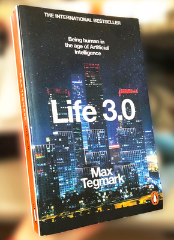
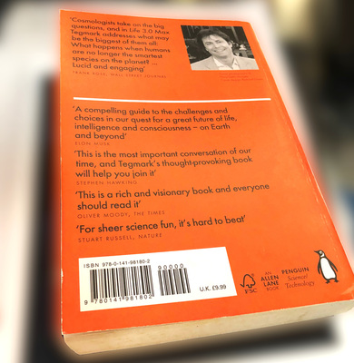

こんにちわ！ AI FORUM
2023 年 8 月 26 日 （土曜日）
2023 年 8 月 26 日 （土曜日）
＜本日のテーマ＞
最近の話題から
AI の意識
あるいは
AI と意識
目次
- [6:30 - 7:00] 前座
- [7:00 - 8:00] パート１ 最近の話題から - AI の意識
- [8:00 - 9:00] パート２ AI と意識について - Yoshua Bengio
- 今日のおわりに
- 総合目次
前座
（本題に入る前のウォーミングアップ）
技術書典１５
- 技術書典１５
- 申し込み！
- techbookfest.org

- 技術書典15 開催およびサークル参加申込方法のお知らせ

- 灰泥屋書院


- これまでの参加歴

- 弊サークルへの参加者、大募集中です！
- 技術書を書きたい人
- 自分の本を書いてみたい人
- いっしょに出典してみましょう！
- みんなでやれば、楽しいですよ
- いろいろ、ノウハウや、テクニカルなことも、ヘルプします！


AI FORUM ポッドキャスト
- 「こんにちわ！ AI FORUM」のポッドキャスト
(https://hello-ai.seesaa.net/)

- 昨日（というのは金曜日）の「音楽と数理ポッドキャスト」でも言及


- 今年に入って（３月から）週２本リリースしてきました

- が、イベントとポッドキャストの時間差が半年（６ヶ月）くらいに追いついたので、
S40 から、週１本のペースに戻します
- ちなみに、
- シーズン４０は「ZENKEI AI FORUM」のファイナルシーズン
- シーズン４１からは（タイトルが）
「こんにちわ！ AI FORUM」


パート１：最近の話題から
AI の意識
振り返り
Max Tegmark
『LIFE 3.0』
- max tegmark の「LIFE 3.0」
  - まじめに読んだのは（読もうとしたのは）最後の８章「Consciousness」だけ
- キーワード
「consciousness = subjective experience」
integrated information theory (IIT)
- 過去の言及
- 音楽と数理ポッドキャスト S01E02
〈トーク〉最近の読書から – 意識と俳句と道元と
(2022/04/18)

- ZAF-2303
Eleizer Yudkowsky

- ZAF-2304
Lex Fridman ポッドキャストへの３回目の出演

- KAF-2306
Munk Debates

- 音楽と数理ポッドキャスト S01E02
〈トーク〉最近の読書から – 意識と俳句と道元と
(2022/04/18)
- Lex Fridman のポッドキャストに最近出たときの話

- ループ構造が関係するかも、みたいなのは、 ありがちな主張だけど、面白いかもと思った

GPT-3 のあとに
ChatGPT が出たとき
- ZAF-2302
ChatGPT とは？


- RLHF など、素の LLM が「本能的」な機能で、
RLHF などは「大脳皮質」的な部分なのかな？
と（漠然と）考えてた
- RLHF など、素の LLM が「本能的」な機能で、
最近の（つまり、８月の）話題から
|
https://twitter.com/omarsar0/status/1689666956905861120
12:56 AM · Aug 11, 2023

Memorization vs. Generalization is one of my favorite ML research topics. One phenomenon of interest, referred to as grokking, is where models flip from memorizing to sudden generalization. A big question LLM researchers are interested in answering is whether LLMs, when trained for longer, are generalizing or memorizing. While evidence for both sides has been presented, it’s still largely inconclusive. There are a lot of open questions regarding memorization and generalization. A better understanding of these behaviors has a lot of implications when trying to further improve these systems from a practical perspective. Hence the emerging interest in the topic. A new article by Google presents an interesting analysis of the topic. ... The article: https://pair.withgoogle.com/explorables/grokking/ |
|
https://twitter.com/ai_database/status/1693540889174638601
5:29 PM · Aug 21, 2023

「わたしの話」を体系的に覚えてもらいながらLLMと会話する技術MemoChat登場 https://aiboom.net/archives/54560 テンセントなどの研究者は、LLMがユーザーのことを ①メモで構造化して記憶し、 ②必要に応じて思い出し、 ③長期的な記憶をもとに話す ようにするパイプラインを開発しました。 |
|
https://twitter.com/ai_database/status/1690905728729694209
10:58 AM · Aug 14, 2023

大規模言語モデルがユーザーに媚びたり忖度してしまう現象を問題視し、 Google DeepMindは媚びや忖度を軽減する方法を模索しています。 ○ Jerry Wei et al. Simple synthetic data reduces sycophancy in large language models LLMがユーザーの意見に無批判に同意したり、誤った情報に対しても同意する言動が 観測されており、この問題を放置すると誤った情報の拡散を促進してしまう恐れがあります。 以下のことが分かっています。 ■モデルが大きくなるほど媚びや忖度は増加する ■指示チューニング（例えばChatGPTにおけるCustom Instructionなど）は 媚びや忖度を大幅に増加させる そこで研究者らは事実に基づく「真偽データ」をLLMにあらかじめ教え込ませることで、 モデルが真偽を知っている主張のみを通すようにする手法を開発しました。 この手法を適用すると、LLMの媚びや忖度が軽減することが実験によって確認されました。 このような技術が発展することでLLMの利用がますます信頼できるものになる一方で、 現時点では各ユーザーのリテラシーに委ねられている部分が大きいことは留意すべきポイントです。 論文：https://arxiv.org/abs/2308.03958 GitHub：https://github.com/google/sycophancy-intervention |
|
https://twitter.com/_akhaliq/status/1692045755178226053
Last edited 2:28 PM · Aug 17, 2023

Teach LLMs to Personalize -- An Approach inspired by Writing Education abs: https://arxiv.org/abs/2308.07968 paper page: https://huggingface.co/papers/2308.07968 Personalized text generation is an emerging research area that has attracted much attention in recent years. Most studies in this direction focus on a particular domain by designing bespoke features or models. In this work, we propose a general approach for personalized text generation using large language models (LLMs). Inspired by the practice of writing education, we develop a multistage and multitask framework to teach LLMs for personalized generation. In writing instruction, the task of writing from sources is often decomposed into multiple steps that involve finding, evaluating, summarizing, synthesizing, and integrating information. Analogously, our approach to personalized text generation consists of multiple stages: retrieval, ranking, summarization, synthesis, and generation. In addition, we introduce a multitask setting that helps the model improve its generation ability further, which is inspired by the observation in education that a student’s reading proficiency and writing ability are often correlated. We evaluate our approach on three public datasets, each of which covers a different and representative domain. Our results show significant improvements over a variety of baselines. |
|
https://twitter.com/npaka123/status/1693391590335869436
7:36 AM · Aug 21, 2023

【勉強メモ】言語モデルにおける複雑なスキルの創発に関する理論 A Theory for Emergence of Complex Skills in Language Models ｜だいち #note https://note.com/daichi_mu/n/n72b6265b09f6 https://arxiv.org/abs/2307.15936 |
|
Consciousness in Artificial Intelligence: Insights from the Science of Consciousness |
|
https://twitter.com/hardmaru/status/1693648477132296702
12:37 AM · Aug 22, 2023

A nice survey of several prominent theories of consciousness, including recurrent processing, global workspace, higher-order, predictive processing, and attention schema theories. They claim there are “no obvious barriers to building conscious AI systems”. https://arxiv.org/abs/2308.08708 |
|
https://twitter.com/kanair_jp/status/1693471130802389367
12:52 PM · Aug 21, 2023

AIの研究と意識の研究をつなぐ試みとして、両分野の専門家で、 AIに意識が生まれるかを議論した論文が公開されました。 https://arxiv.org/abs/2308.08708 |
| LLM Self-Alignment with Backtranslation |
|
https://twitter.com/johnjnay/status/1690895881149829120
10:19 AM · Aug 14, 2023

LLM Self-Alignment w/ Backtranslation -Fine-tune LLM on small amount of seed data -Use it to generate instruction prompts (self-augmentation) on unlabelled data & select best (self-curatation) -Finetune on that -Outperforms all other LLaMa-based models https://arxiv.org/abs/2308.06259 |
|
https://twitter.com/arankomatsuzaki/status/1690887516982050816
9:46 AM · Aug 14, 2023

Self-Alignment with Instruction Backtranslation Presents a scalable method to build a high quality instruction following language model by automatically labelling human-written text with corresponding instructions. https://arxiv.org/abs/2308.06259 |
雑感 -- 素人考え
- きちんとした研究でも、「意識」というか「記憶」というか、 そういうものの導入の研究が目につくようになってきた
- 先の ChatGPT への RLHF みたいなアプローチ
（alignment の文脈）とは別な文脈で、
「subjective experience」
をどうシステムに導入するんだろう？
- 今の LLMs には存在していない
記憶みたいなものを保持する「仕組み」を追加する必要があるんだろうな - （現在の仕組みの上で、運用として、プロンプトで、工夫するのではなく）
- この「LLMs の上に、別の仕組みを被せる」というのが、 「大脳的だな」とか、なんとか……
- 今の LLMs には存在していない
パート２
AI と意識について
AI と意識について
Yoshua Bengio のブログポスト
- max tegmark のツイッターから
https://twitter.com/tegmark/status/1690742601769443328 
For those of you who don’t work in AI: Yoshua is widely respected as one of the most brilliant and influential AI researchers, and runs the largest non-corporate AI research center in the world. So worth listening to. https://twitter.com/BogdanIonutCir2/status/1690480946351374336 Yoshua Bengio: ’For most of these years, I did not think about the dual-use nature of science because our research results seemed so far from human capabilities and the work was only academic. It was a pure pursuit of knowledge, beautiful, but mostly detached from society until about a decade ago. I now believe that I was wrong and short-sighted to ignore that dual-use nature. I also think I was not paying enough attention to the possibility of losing control to superhuman AIs.’ ... https://yoshuabengio.org/2023/08/12/personal-and-...
- Yoshua Bengio のブログ
Personal and Psychological Dimensions of AI Researchers Confronting AI Catastrophic Risks
(Published 12 August 2023 by yoshuabengio)
- ブログポスト：
Personal and Psychological Dimensions of AI Researchers Confronting AI Catastrophic Risks
(Published 12 August 2023 by yoshuabengio)壊滅的な AI の危険に直面する AI 研究者の、個人的および心理的な次元
（2023年8月12日 Yoshua Bengio）On May 31st, 2023, a BBC web page headlined: “AI ‘godfather’ Yoshua Bengio feels ‘lost’ over life’s work.” However, this is a statement I never made, not to the BBC nor to any other media. I did attempt, in these interviews, to articulate a psychological challenge I was contending with. I aim to offer here a more in-depth explanation of my own inner searching and tie it to a possible understanding of the pronounced disagreements among top AI researchers about major AI risks, particularly the existential ones. We disagree strongly despite being generally rational colleagues that share humanist values: how is that possible? I will argue that we need more humility, acceptance that we might be wrong, that we are all human and hold cognitive biases, and that we have to nonetheless take important decisions in the context of such high uncertainty and lack of consensus. 2023年5月31日、BBC は「AI の生みの親、ヨシュア・ベンジオは生涯の仕事に"絶望"を感じる」 というタイトルのウェブページを公開しました。 しかし、これは私は言ったことではありません、 BBC に対しても、他のメディアに対しても。 これらのインタビューで、私が試みたことは、 私が対処しようとした心理的なチャレンジを表現しようとしたことでした。 このページで私が提示したいのは、 私自身の内的な探究 (inner searching) のより深い説明であり、 このことを、現在トップ AI 研究者の中に見られる AI リスク、特に人類存亡の危機に対する意見の相違に対する、 ありうる理解に結びつけることです。 我々は、 humanist values を共有する、一般的に合理的な仲間であるにもかかわらず、 強く反対しあっていますが、一体どうしてそういうことになっているのか？ 私は、我々は humility と acceptance がもっと必要であると主張します。 我々は間違っているかもしれないという、 我々はみんな人間であり、認知のバイアスを持っているという、 そして、それにもかかわらず、 そのように不確定性が高く、合意が欠けている状況で、 我々は重要な決断を取らなければならないという、 そういう humility と acceptance が。 What I actually said in the BBC interview was: “It is challenging, emotionally speaking, for people who are inside, especially if like myself, you’ve built your career, your identity around the idea of bringing something useful and good to society and to humanity and to science”. What I meant was that I was in the process of changing my mind about something very personal: whether my work in its current trajectory – racing to bridge the gap between state-of-the-art in AI and human-level intelligence – was aligned with my values. Is it actually beneficial or dangerous to humanity, given the current structure of society and the fact that powerful tools like AI are dual-use, they can be used for good or for bad? I am now concerned that we may not be on a good course, and that in order to reap the benefits of AI and avoid catastrophic outcomes, major changes are needed to better understand and mitigate the risks. 私が実際にその BBC のインタビューで言ったことは、 「気持ちを考えると、内部の人間にとって、それは大変なことです。 特に、たとえば私自身のように、 自分のキャリアを、つまり 社会や人類、そして科学にとって役に立つ、良いものを作ろうというアイデアの周囲に 自分のアイデンティティを構築してきた人たちにとっては。」 私が言いたかったことは、 とても個人的な何かについて、自分の考えを変えようとしている過程の中にあったということです。 果たして、現在の流れでの、つまり最先端の AI と人間レベルの知性の間のギャップを埋めようと 競争している文脈で、私の仕事は私の価値観と揃っているのかどうか。 実際のところ、それは人類にとって有益なのか、危険なのか？ 現在の社会の構造と、 AI のような強力なツールが諸刃の剣であるという事実を考えた場合、 それらは正しく使われるのか、誤って使われるのか？ 私は今、我々は正しいコースに載っていないかもしれないと心配しています。 そして、AI の有用性を取り、壊滅的な結末を避けるためには、 それらのリスクをよりよく理解し、そのリスクを和らげるために、 大きな変化が必要です。 For most of my research career, which started in 1986, my focus has been purely scientific: understanding the principles of intelligence, how it works in biological entities, and how we might construct artificial intelligences. I worked on the hypothesis that a few simple principles, by analogy to physics, may explain intelligence. The last few decades have provided evidence in favor of that hypothesis, rooted in the ability to learn from data and experience. Learning principles are much simpler than the massive complexity in intelligent entities – for example the billions or trillions of parameters in very large neural networks. For most of these years, I did not think about the dual-use nature of science because our research results seemed so far from human capabilities and the work was only academic. It was a pure pursuit of knowledge, beautiful, but mostly detached from society until about a decade ago. I now believe that I was wrong and short-sighted to ignore that dual-use nature. I also think I was not paying enough attention to the possibility of losing control to superhuman AIs. 私の研究者としてのキャリアの大半において、それは 1986 年に始まったが、 ずっと私のフォーカスは純粋に科学的なものでした。 それは、知能の原理を理解することであり、 生物学的な存在 (entities) の中でそれがどのように動いているのか、 そして我々がどうやって人工的な知能を構築できるのか、ということでした。 私は、物理学との類似性を考えて、少数の原理によって知能は説明できるはずだ、 という仮定のもとに研究してきました。 過去数１０年に示された、 データと経験から学習する能力に根を持った事実は、 この仮定を支持するものです。 学習の原理は、知能の実態 (entities) に見られる、 例えば、とても大きなニューラルネットに含まれる billions or trillions ものパラメータのような、 巨大な複雑性、に比べて、はるかに単純です。 これらの年月の大半において、私は、科学の dual-use 性について考えていませんでした。 というのも、我々の研究結果は、人間の能力からかけ離れたもので、 研究は学術的なものに過ぎないと思われたからでした。 およそ１０年くらい前までは、それは純粋な知識の探究であり、 しかし社会からはほとんど切り離されたものでした。 今私は、私は間違っていたと、 近視眼的にその dual-use 性を無視していたと思います。 また私は、 superhuman AIs にコントロールを奪われる可能性について 十分な注意を払っていなかったと思います。 In the last decade, AI has moved from a mostly academic endeavor to one with a large and now dominant industrial component. Deep learning technology is being deployed more and more, with the perspective that AI may become the heart of future economic growth in the coming decades (see the approximately 20 trillions of dollars yearly impact estimated by McKinsey or Stuart Russell’s estimate of 14 quadrillion dollars of net present value in his 2019 book). This transition has enticed me to think much more about the social impact of AI. I focused on the good it could – and the good it already does – bring to the world. I continued working on fundamental questions, like attention (which gave rise to Transformers, which power LLMs) and worked on applications of AI in biomedical sciences, drug discovery, in fighting climate change, and addressing biases that could yield discrimination. I started a discussion with my colleagues from the social sciences and humanities on the necessity of ethical and legislative guardrails. This led to the Montreal Declaration for a Responsible Development of AI in 2017-2018, my leadership of the Global Partnership on AI working group on Responsible AI (2020-2022), and our recent work with UNESCO on the Missing Links on AI Governance (2023). （日本語訳） I read and evaluated a preprint version of Stuart Russell’s 2019 book (Human Compatible), which increased my awareness of a possible existential risk for humanity if we do not maintain control over superhuman AI systems. I understood his arguments about the potential danger of misalignment between human intentions and AI behavior intellectually, but had not fully digested what it meant emotionally for me and my own career. Reading the book had not changed my fundamental belief that, in balance, we were on a good trajectory with AI research: good for science and good for society with expected positive impacts in many domains. I thought the outcome would be positive with some adjustments, like regulations to avoid discrimination and banning lethal autonomous weapons, and while existential concerns were worthy of attention, they would become potentially relevant only in a distant future. I still continued to feel good about the focus of my work, somehow looking the other way when it came to the possibility of misuse and catastrophic outcomes. （日本語訳） At this time, I believed the arguments, that remain commonly held in the AI community, to discard the importance of such risks. Human-level AI seemed plausible but decades to centuries away and the systems we trained in our labs were so incompetent relative to humans that it was difficult to feel a threat, whether from misuse or loss of control. It seemed obvious that well before we would get to that point, we would reap loads of social benefits from deploying current and improved AI systems. Since human-level AI seemed so far away, we imagined it as probably quite different from current methods, suggesting that it was difficult to design safety mechanisms for yet unknown AI systems. It never even crossed my mind to question whether some knowledge could be dangerous or whether some code should not be put in everyones’ hands. I thought it was a good thing that some people studied AI safety, but was quite content to continue on my course of trying to figure out how to bring system 2 – i.e., deliberate reasoning – abilities into deep learning, a research program that I started almost a decade ago with our work on attention. この時は、私はその主張、それは AI コミュニティに広く見られるもので、 そのようなリスクの重要性を無視するというものを信じていました。 人間レベルの AI は起こり得そうだが、数１０年から数１００年後のことで、 我々が研究室で学習しているシステムは人間に比べるには全く不十分で、 それが誤用であれ、コントロールの喪失であれ、脅威を感じるのは難しいと。 そのような状況に至るずっと前の段階で、 我々は最新の改善された AI システムをデプロイすることで、 社会的な利点を得るだろうことは当然だと思われました。 人間レベルの AI は、そのようにずっと先のことだと思われたので、 我々はそれが、おそらく今の方法からはずっと異なったものと想像していました。 つまり、まだ分かっていない AI システムに対して 安全性のメカニズムをデザインするのは難しいと思っていました。 ある知識が危険であるとか、 あるコードはみんなの手に渡るべきではないかという疑問が 私の心によぎったことすらありませんでした。 私は、ある人々が AI の安全性について研究することは良いことであるとは思っていましたが、 私自身は、システム２ -- つまり deliberate reasoning -- という能力を deep learning にもたらす方法を見つけ出すという、 我々のアテンションの研究に関する、ほとんど１０年前にはじめた研究プログラム を継続することに十分満足していました。 When ChatGPT came out, my immediate reaction was to look for its failures. Like many others, I found corner cases where it produced incoherent output, suggesting that it was still way off regarding system 2 abilities. However, within a month or two of the release, I grew more and more impressed by how well it performed. I started to realize that top AI systems had for the most part achieved mastery of language, i.e., were essentially passing the Turing test, at some statistical threshold.That was completely unexpected, for me and many others. I also saw that although ChatGPT would sometimes confabulate and be incoherent with facts and its own outputs, it was able in most cases to produce the appearance of reasoning. When GPT-4 came out, progress on system 2 abilities was apparent. Yet, it is likely that nothing fundamentally changed in the underlying design principles besides increasing compute power and training for longer or on better/more data. On the other hand, several arguments have been made about missing ingredients for system 2 abilities, including in my own papers. ChatGPT が出現したとき、 私の最初のリアクションは、その問題点を見つけてやろうというものでした。 他の人たちと同様に、私は incoherent な出力を生成するような corner cases （通常の使用範囲を超えたケース）を見つけて、 それはシステム２の能力に関しては、以前、ずっと劣るものでした。 しかし、リリースから１〜２ヶ月の間に、 私はそれがとても良く働くことにどんどん関心していきました。 私は、トップの AI システムは、ほとんどの部分で、 言語の習得は達成していると気付き始めました。 つまり、ある統計的な閾値を持って、それらは本質的にチューリングテストをパスする、と。 このことは、私にとって、そして多くの人にとっても、全く予想しなかったことでした。 私はまた、 ChatGPT がしばしば confabulate したり、 真実や自身の出力について incoherent であるが、 大抵の場合、理由の説明を与えることができることも見ました。 GPT-4 が出た時は、システム２の能力に関する進歩は明らかでした。 しかし、それは、ベースとなっている設計原理は本誌素敵に何も新しくなく、 単に計算パワーと、より長い、または高品質/大量のデータに対する学習で達成されたようでした。 一方、私自身の論文に含まれるようなシステム２の能力のための 要素が欠けているという主張がいくつかなされました。 Since I had been working for over two years on a new approach to train large neural networks that could potentially bridge the system 2 gap, it started to dawn on me that my previous estimates of when human-level AI would be reached needed to be radically changed. Instead of decades to centuries, I now see it as 5 to 20 years with 90% confidence. 私は既に２年以上、そのシステム２へのギャップを埋める可能性のある、 大きなニューラルネットワークを学習する新しいアプローチについて研究していたので、 人間レベルの AI ができるまでの時間の、私の以前の予想を、 根本的に変更しなくてはならないという事実は、私に大きくのしかかってきました。 数十年から数百年ではなく、 今私は 90% の確信で、それが５年から２０年であると考えます。 And what if it was, indeed, just a few years? そして、もし仮に、それが実際のところ数年だったら？ The other factor besides when is what capabilities to expect, nicely explained by Geoff Hinton in his Cambridge talk in May: even if our AI systems only benefit from the principles of human-level intelligence, from there we will automatically get superhuman AI systems. This is because of the advantages of digital hardware over analog wetware: exact calculations and much greater bandwidth between computers enable knowledge transfer between models many orders of magnitude faster than possible by humans. For example, spoken language between humans can transmit 39 bits/second. The much faster communication between computers enables a form of parallelism making it possible for AI systems to learn much faster and from more data. いつ、どんな能力が予想されるかという要素とは別の話は、 Goeff Hinton が５月に行った Cambridge talk で、うまく説明されています。 たとえ我々の AI システムが、人間レベルの知性の原理からの恩恵だけ受けたとしても、 そこから先は、我々は自動的に superhuman AI システムに至る、と。 これは、アナログな wetware に対するデジタルハードウェアの優っている点のためです。 現実な計算と、コンピュータの間のずっと広いバンド幅によって、 モデルの間の知識の移動の速度は、 人間よりも何桁も大きく速いからです。 実際、人間の間で喋られる言語は１秒に 39 ビット伝えることができます。 ずっと高速なコンピュータの間のコミュニケーションは並列化が可能であり、 AI システムがより多くのデータから、より高速に学ぶことを可能にします。 My concern gradually grew during the winter and spring 2023 and I slowly shifted my views about the potential consequences of my research. I decided to sign the letter asking for more caution about systems more powerful than GPT-4. I realized such LLMs had digested a lot of knowledge about society and humans that could one day be exploited by bad actors in ways that could be catastrophic, namely to democracy, public safety and national security. A crucial technical element here is that prompting and fine-tuning could turn an apparently innocuous system into one targeted at malicious intent, as well as lower the required level of technical skills to do so. Moreover, such a transformation could be done at almost no cost, and with a minimal amount of data. One could also cheaply transform a dialogue system into a goal-directed agent that could act on the Internet, as was illustrated by AutoGPT. This brought to the forefront the possibility that, within a few years, we could have catastrophic outcomes enabled by more powerful AIs, either because of carelessness, malicious human intent, or by losing control of highly autonomous systems. 私の心配は 2023 年の冬から春にかけて徐々に大きくなってきました。 そして私の研究の潜在的な帰結に関する私の見方は、ゆっくりと変化していきました。 私は GPT-4 より強力なシステムに関して、より注意を払うべきというレターに サインすることを決断しました。 そのような LLMs は社会と人間に関する大量の知識を取り込んでいると認識しました。 それは、ある日、悪者によって壊滅的なこと、つまり 民主主義や公共の安全性、国際安全に対して、使われて得る、と。 ここでの、技術的に重要な要素は、 prompting と fine-tuning が明らかに無害なシステムを悪い目的のシステムに 作り替えることが可能であり、 さらに、そのために必要な技術的なスキルのレベルを下げることが可能であることです。 その上、そのような変更はほとんどコストなしに、最小のデータ量で実行できます。 AutoGPT で示されたように、対話システムを goal-directed な、インターネットで動くエージェントに 安価に作り替えることもできます。 このことは、より強力な AI によって、数年のうちに壊滅的な結果となる可能性をもたらします。 それは注意不足だったり、悪意のある人間の意図だったり、 高度に自動化したシステムの制御を失うことによって。 I started reading more about AI safety and came to a critically important conclusion: we do not yet know how to make an AI agent controllable and thus guarantee the safety of humanity! And yet we are – myself included until now – racing ahead towards building such systems. （日本語訳） It is difficult to digest such reflections and carry out the mindset shift that it entails. It is difficult because accepting the logical conclusions that follow means questioning our own role, the value of our work, our own sense of value. Most of us want to see ourselves as fundamentally good, with a virtuous purpose, contributing to something beneficial for society and our community. Having a positive self-image makes us feel good about our work and gives us the motivation and energy to move forward. It is painful to face the idea that we may have been contributing to something that could be greatly destructive. Human nature will lead us towards brushing aside these thoughts or finding comfort in reassuring arguments rather than face the full horror of such possibilities. Bringing the benefits of AI to the table is not sufficient to compensate if the possible negative outcomes include catastrophic misuses of AI on par with nuclear war and pandemics, or even existential risk. （日本語訳） I have a 20-month old grandchild whom I love very much, and he is very present in my thoughts and emotions. While the future is filled with uncertainty, and I don’t assume to know how any of this will play out. I cannot rationally reject the catastrophic possibilities nor ignore the deep sense of empathy I feel for him and for the multitudes whose lives may be deeply affected or destroyed if we continue denying the risks of powerful technologies. It is truly horrible to even entertain these thoughts and some days, I wish I could just brush them away. Or, be like before 2023, when these thoughts did not have a stronghold on my conscious mind. （日本語訳） My own journey these past months has made me curious about the psychological factors at play as we all wrestle with this new reality and debate scenarios or probabilities. I recognize cognitive biases are most likely still involved in my own thinking and decision making, as is most often the case for humans in general, including AI researchers, despite our best intentions. And, I have a sincere desire to understand why there is so much disagreement amongst AI researchers – almost all of whom are incredibly smart and devoted – about the magnitude of risk and best course of action. How can this be? And how do we find the common ground from which to move forward together to ensure AI serves the future of humankind? （日本語訳） As we argue – in public and in person (not to mention the terribly polarizing social media) – about these difficult questions, I believe that we should all keep in mind the possibility of psychological factors such as confirmation or self-serving biases, and be careful to avoid making overconfident statements. People on both sides of this debate who have taken strong positions (including myself of course!) are encouraged to explore underlying mindsets and emotions behind their certainty in the face of such troubling questions. Curiosity, openness and humility will enhance our ability to explore different viewpoints and hold a more compassionate view, rather than polarizing the discussion and fueling frustration or anger towards the people we disagree with. （日本語訳） Being able to change one’s views when faced with new evidence or new arguments is essential for the advancement of science, as well as to steer society towards a beneficial future. The more curious and interested we are in our mistakes, the more we learn, grow, evolve and broaden our capacity to impact others and the world in a positive manner. As AI researchers, we must honor this commitment to ongoing exploration and avoid painting ourselves as a staunch advocate of a single view. The tendency to overcommit to specific viewpoints despite a high degree of true uncertainty is reminiscent of how, in machine learning, different maximum likelihood world models fitted on the same data may strongly disagree in places where epistemic uncertainty is large. Being able to accept that we have been wrong, for ourselves and in the eyes of others, is difficult but necessary to make scientific progress and converge towards a morally just path. Interestingly, having the humility to accept that we may still be wrong corresponds to adopting the Bayesian approach of aggregating all the views, including those we disagree with, so long as they are consistent with facts and logic. Expressing certainty of upcoming doom or ridiculing others’ views as science-fiction is, on the contrary, not compatible with this Bayesian open-mindedness. （日本語訳） Before nuclear power and spaceflight were realized, they too were science fiction. As noted by Allan Dafoe, being cautious means very different things for scientific inquiry and decision-making. This difference was reflected in the thinking of physicists Leo Szilard and Enrico Fermi. Szilard wrote: “From the very beginning [1939] the line was drawn […] Fermi thought that the conservative thing was to play （日本語訳） down [his 10%] possibility that [a nuclear chain reaction] may happen, [Szilard] thought the conservative thing was to assume that it would happen and take all the necessary precautions.” （日本語訳） Unfortunately, to settle the AI debate, we can’t rely on mathematical models of how research, technology and politics are likely to evolve in the next decade under different interventions. We don’t have past experience interacting with machines more intellectually capable than us and thus obtain statistics of what is safe and what isn’t. Yet we cannot wait until irreversible damage is done in order to change course. AI researchers are used to easily performing many experiments, including controlled experiments, and statistical assessments before drawing conclusions. Here we instead have to resort to a form of reasoning and out-of-distribution projection that is closer to how many of our colleagues in the social sciences work. It makes it harder and more uncertain to evaluate possible futures. However, reason and compassion can still be used to guide our conversations and actions. As scientists, we should avoid making claims we can’t support; but as decision-makers we also ought to act under uncertainty to take precautions. In spite of our differences in points of view, it’s time for our field of AI to seriously discuss the questions: what if we succeed? What if potentially dangerous superhuman AI capabilities are developed sooner than expected? Let’s embrace these challenges and our differences, while being mindful of each other’s humanity and our unique emotional and psychological journeys in this new era of AI. 残念ながら、この AI ディベートを解決するために、 研究や技術、政治が今後１０年、異なった介入によってどのように発展するのかに関する 数学的なモデルに頼ることはできない。 我々は、我々よりも知的能力の高い機械と関係してきた過去の経験と、 そこから得られる何が安全で何が安全でないのかに関する統計的情報をを持たない。 一方で、コースを変えるために、不可逆なダメージがなされるまで待つこともできない。 AI 研究者は、コントロールされた実験を含む実験を、簡単にたくさん実施することや、 結論を描く前に統計的な評価を実施することに慣れている。 しかし、ここでは、我々は理由付けと、分布から外れた予測を形成しなければならない。 それは、社会科学の研究にいる我々の仲間の多くがやっていることに近いものだ。 これは、可能な未来を評価することをより難しく、不確実にする。 しかし、理由と同情 (compassion) は、まだ、我々の会話と行動を導くために役に立つだろう。 科学者として、我々は、我々が同意できない主張をすることは避けるべきである。 しかし、 decision-makers としては、我々は同時に、不確実性の元に、警戒を持って 行動を取らなければならない。 我々の見方の違いにもかかわらず、 今が我々 AI の分野のために、真剣にこの問い -- もし我々が成功したならば -- を議論する時である。 もし、潜在的に危険なスーパーヒューマン AI の能力が予想よりも早く開発されたら？ そういうチャレンジや、我々の違いを受け止めよう。 同時に、お互いの人間性と、この新しい AI 時代の中での 我々のユニークな感情的な、そして心理的な旅にマインドフルになりましょう。 Acknowledgements. Yoshua Bengio thanks Valerie Pisano, Soren Mindermann, Jean-Pierre Falet, Niki Howe, Nasim Rahaman, Joseph Viviano, Mathieu Bourgey, David Krueger, Eric Elmoznino, Claire Boine, Victor Schmidt, Xu Ji, Anja Surina, Almer van der Sloot, and Dianbo Liu. （日本語訳）


System 2 について
- 「System 2」というのは、
有名な（ダニエル・カーネマンの）
『Thinking Fast and Flow』


- 先に紹介した Max Tegmark 『LIFE 3.0』でも、
システム１とシステム２という話は、言及されていた- Max Tegmark は、そこに「システム０」というものを追加してた
-
つまりシステム１とシステム２という話が、
今回 Yoshua Bengio の話で出てきたので、
あぁ、当然、そう考えるよね、と思った、と


Yoshua Bengio の
System 2 についての研究
- youtube:
From System 1 Deep Learning to System 2 Deep Learning
Yoshua Bengio (NeurIPS 2019)
- スライド (PDF):
DEEP LEARNING FOR SYSTEM 2 PROCESSING
(YOSHUA BENGIO) AAAI’2019 Invited Talk
(February 9th, 2020, New York City)
- local copy: AAAI-9feb2020.pdf
- （多分、ほとんど同じ内容だと思う）
- 話の内容：
- system 2 に「時間」 (causality) は重要
... つまり iid は期待できない - consciousness に attention は重要
- consciousness に Language は重要
- (~13:00)
compositionality
Goeff Hinton が言ってた、と - (~28:00)
Consciousness Prior
~ Sparse Factor Graph- Bengio (2017) arxiv: 1709.08568
- (~36:00)
meta-learning
- Bengio et al (2019) arxiv: 1901.10912
- (~38:00)
meta-learning
- Ke et al (2019) arxiv: 1910.01075
- Modularity
- (~39:00)
RIMS
- Goyal et al (2019) arxiv: 1909.10893
- system 2 に「時間」 (causality) は重要
- スライド (PDF):
DEEP LEARNING FOR SYSTEM 2 PROCESSING
- youtube:
Rockwood Memorial Lecture 2021
Yoshua Bengio, Ph.D., Mila, Université de Montréal (7/26/21)
- スライド (PDF):
From Conscious Processing to System 2 Deep Learning
Yoshua Bengio UCSD Rockwood Memorial Lecture, July 26th, 2021 - local copy: Bengio_slides.pdf

- スライド (PDF):
From Conscious Processing to System 2 Deep Learning


こういう方向で研究を進めていた
Yoshua Bengio が
潜り抜けてきた葛藤が
先のポストだったんだな……
Richard Branson のポスト
Rutger Bregman
『Humankind』
- ツイートから
(https://twitter.com/richardbranson/status/1694999046002188544)
6:03 PM · Aug 25, 2023

- The human capacity for kindness
Richard Branson, Published on 25 August 2023

- 内容は、ぼくも以前、読んで、なるほどと思った
ルトガー・ブレグマンの『希望の歴史』
（原題『Humankind』）
- ZAF-2205

- amazon: Humankind 希望の歴史 上
- 購入履歴を見ると 2021年９月に買ってる
- 読んだ時、著者の活動としての「デ・コレスポンデント」が、
でも思うように活動できてない感じだったので、
なにかもっと工夫が必要なんだな
- wired.jp: 「事件」を見る代わりに「構造」を見よう。
「今日」を見る代わりに「毎日」を見よう。
『デ・コレスポンデント』はニュースをこう変える (2017.02.03)
- wikipedia:
De Correspondent

On 31 December 2020, The Correspondent is due to shut down.[6] Pfauth and Wijnberg noted that the platform was no longer financially viable due to two primary reasons: poor conversion and retention of members, especially with only 27% of founding members renewed for the 2021 fiscal year,[15] as well as readers' demand for more immediate news in light of the COVID-19 pandemic that ran contrary to the outlet's concept of "unbreaking news".
- About The Correspondent (11 December 2020)

- ZAF-2205
- このブログポストの最後の締めの部分を引用：
Bregman closes the book with his most important rule to live by: “So be realistic. Be courageous. Be true to your nature and offer your trust. Do good in broad daylight, and don’t be afraid of your generosity. You may be dismissed as gullible or naïve at first. But remember, what’s naïve today may be common sense tomorrow.” Hear, hear.


- うん、これは、よい言葉だ
- そういえば
今、何かすごいサービス／製品は、
未来の普通だ


さて、特にタイムリーな本でもないが
リチャード・ブランソンが
今この本を持ち出す何か特別な理由があるのか？


Remember,
what’s naïve today may be
common sense tomorrow
Yoshua Bengio と
Yuval Harari のインタビュー
そこに見られた覚悟と希望
- youtube:
Artificial Intelligence, Democracy, & the Future of Civilization
Yoshua Bengio & Yuval Noah Harari (Jun 1, 2023)
- 素朴なレベルでの話
- 「SNS から bot を排除しよう」、という Yuval Harari の主張
- 「bot に人権はない」と言い切っている
- もちろん、今の bot （や、今の LLMs）には、意識は芽生えてないだろうが、
でもそれって 100% 確かなのかな？と - そもそも「意識がある／ない」の判断が、今、確実にできない状況で、
その意味では確信はもてないよな - （かつての Yoshua Bengio を含む） AI 研究者は、 基本的に AI の高度化として、人間並みの AI 、つまり「意識のある AI」を 目標にしてきただろう
- もし仮に、（今のぼくらが認識できないだけで）
意識があるとしたら、
そう考え始めると、そんなに元気よく「bot に人権はない」と言い切れない
- その前に、「人間を装う AI の開発は厳格に禁止すべき」という主張
- その理解を助けるための例えとして、
「お金の偽造」を例に出していた - そう言われると、うん、確かに、「人間の偽造」である AI は よくないのは分かる
- でも、なんと言うか、人間っぽい AI ってのも、やっぱり、 過去の（直近の）研究者が目指していたものだよね
- ぼくとか、自分の声で喋るコンピュータプログラムとか、 おもしろいと思ってしまう者な（今だに）
- その理解を助けるための例えとして、
- 「SNS から bot を排除しよう」、という Yuval Harari の主張
- 覚悟
(https://youtu.be/TKopbyIPo6Y?t=1861)

(Yoshua Bengio) Well, I would say, it would be difficult, especially as if we don't have enough time. But when you get discouraged about something that seems so much bigger than your own little human person,
So think about people have been fighting for years, decades, for us to change our ways to deal with climate change. It may seem like a desperate cause or, at least, it has for many years and hopefully it's getting better. but people continue fighting, right? continue trying. That's what we have to do with the challenge of AI...
and it's worth it. Because we might bring good health to everyone, education, solve climate change, and we might even be able to reform Society completely, in ways that maybe you would call Utopia. But might give us all of these good things and even better than the current kind of society we have in terms of democracy and well-being of people.
(Vassy Kapelos) Do you see, Professor Harare, a reason for optimism in the same vein?
Do you feel that the worst case scenario is avoidable?
(Yoshua Bengio) Wait, wait. I didn't say that I was optimist. I said that... I don't want to be either optimist or pessimist. I said that we have a duty, a moral duty, to go for the optimist solution and try to make it happen. - HOPE
(https://youtu.be/TKopbyIPo6Y?t=2107)

I completely agree and I would go farther than that.
If we want to avoid the Big Brother totalitarian regime that we talked about,
the only way to converge to something that would preserve our values is
There are subsets of humans that are- more ethical,
- wiser,
- better understand themselves,
- more compassionate,
- more rational.
How do we bring that to the whole of humanity?
That's the Utopia I was talking about. - この辺の感覚、 ぼくも（自分を含めて）科学者（コミュニティ）に対して感じていることに近い
- KAF-2305 ぼくの「Past, Present, and Future」


- 元ネタは「音楽と数理ポッドキャスト」
S02E20 (English) Past, Present, and Future (May 19, 2023) 「Scientists Are Different」

- 英語回なので英語で喋ってるけど、
自分で意訳というか、日本語にしてみる
……そう言う意味で、ぼくはアカデミックな感覚に戻りたい。 なにか根本的なことをやりたいし、 「公共」というセンスで、みんなのために働きたい。
気付いたんだけど、 科学者が仕事をする時と、サラリーマンが仕事するときのマインドセットって 根本的に違うな、と。だよね？
サラリーマンを経験する前は、そう感じてなかったけど、 うん、科学者って人のために働いているよね、みんなのために、分け隔てなく。 ほんとうにみんなのために、我々科学者は人のために働いている、と。 そのことが、それ以外の世界との根本的な違いだなと、 認識できたと思う。
科学者は、ある会社のためだけに働いている訳ではないし、 ある国のためだけに働いている訳ではない。 我々は世界のために働いているだよね。 ぼくはこのことに気付いた。本当に理解した。
えっと、以前、日本での仕事探しを断念して、それは 2001 年のことだけど、 オランダに引っ越したけど、それは、そこでぼくを研究者として雇ってくれたから。 それは、ぼくにとっては、なんの問題もなかった。
科学者のコミュニティはそんな感じ。我々は、ある意味、人類のために働いている、と。 その時、 2001 年の頃は、ぼくはまだそんな風には意識してなかったけど、 今は、ぼくがやってきたことはそういうことだったと認識してる。 そして、ぼくの次のキャリアとして、そういう風に働きたいと思ってる。 もし可能なら、そういう仕事をしたいと思う。 - 以上、結論はありません

個人的な混乱
覚悟と希望


{kind=link}
{kind=link}
{kind=link}
みなさんは
どう考えますか？
今日のおわりに
……
今後の予定
- 次回「こんにちわ！ AI FORUM」は
2023 年 9 月 30 日（土曜日）
開催の予定です！
- ご意見、ご希望など、お気軽に！
- フォーラム講演者、サークル同人誌活動への執筆者、絶賛、大募集中です！
お気軽にお問い合わせください！
総合目次
- 前座
- パート１ 最近の話題から -- AI の意識
- パート２ AI と意識について
- 今日のおわりに